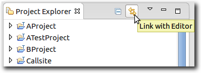
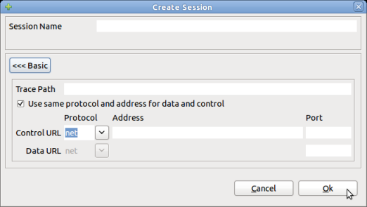
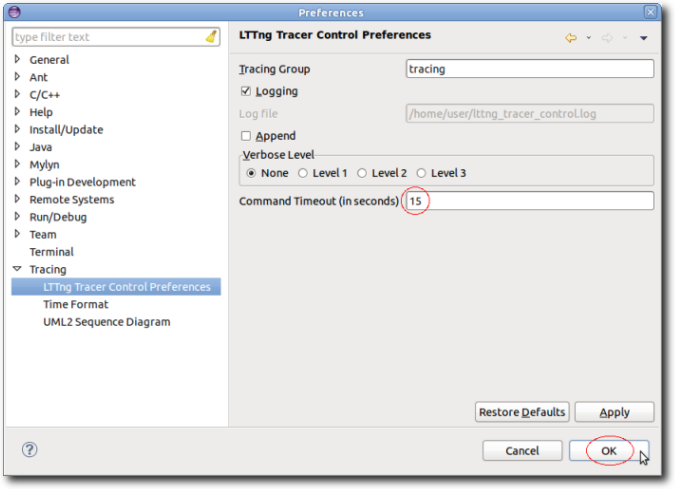
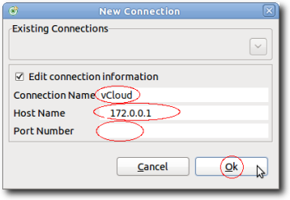
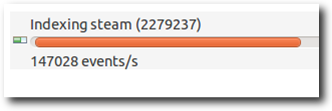

Short Description
Many enhancemants and improvements have been made to
the LTTng integration in Eclipse as well as to the Tracing and
Monitoring Framework (TMF). Also, a new GDB Tracepoint Analysis
feature based on TMF is included in this release.
Here are the highlights of release:
- Support for Multiple Simultaneously Open Traces
- Support for Link With Editor
- New Batch Trace Import Wizard
- LTTng Tracer Control Improvements
- Event Details in Properties View
- Support for Source and Model Lookup
- Statistics View Improvements
- Support of Filters In Control Flow View
- Timestamp Format Preferences
- Trace Indexing Progress and Speed
- State System Explorer View
- Generic Call Stack View
- Miscellaneous Improvements
- New GDB Tracepoint Analysis Feature
Note: The support for the legacy LTTng tracer (v0.x) is removed.
Support for Multiple Simultaneously Open Traces
With the support of Events editors as replacement
to the Events view it is now possible to open multiple traces
simultaneously at the same time. The Events editor shows the
basic trace data elements (events) in a tabular format. The editors
can be dragged in the editor area so that several traces may be
shown side by side. These traces are synchronized by timestamp.
Other open tracing views reflect the trace in focus.
Refer to the User Guide for detailed information on the Events Editor and its usage.

Support for Link With Editor
The tracing project now supports the feature
Link With Editor of the Project Explorer view. With this
feature it is now possible to
- select a trace element in the Project Explorer view and the corresponding Events editor will get focus if the relevant trace is open.
- select an Events editor and the corresponding trace element will be highlighted in the Project Explorer view.
Refer to the User Guide for detailed information on this feature and its usage. 
New Batch Trace Import Wizard
The Batch Import Trace Wizard allows users
to search their media for traces and import multiple traces of
varying types simultaneously. It also handles name clashes and
renaming of traces.
Refer to the User Guide for detailed information on this Batch Import Trace Wizard and its usage.
LTTng Tracer Control Improvements
- The LTTng Control View now supports LTTng Tools 2.1. This introduces the possiblity to configure network streaming and event filtering at the tracer level.
- A new preference has been introduced to configure the command execution timeout.
- The New Connection dialog now allows for specifying a ssh port.



Event Details in Properties View
The Properties view now display the event details
when selecting an event in the table of the Events editor.
Refer to the User Guide
for detailed information on the Events Editor and its usage.
Support for Source and Model Lookup
For CTF traces using specification v1.8.2 or above, information can optionally be embedded in the trace to indicate the source of a trace event. This is accessed through the event context menu by right clicking on an event in the table.
- If a source file is available in the trace for the selected event, the item Open Source Code is shown in the context menu. Selecting this menu item will attempt to find the source file in all opened projects in the workspace. If multiple candidates exist, a selection dialog will be shown to the user. The selected source file will be opened, at the correct line, in its default language editor. If no candidate is found, an error dialog is shown displaying the source code information.
- If an EMF model URI is available in the trace for the selected event, the item Open Model Element is shown in the context menu. Selecting this menu item will attempt to open the model file in the project specified in the URI.
Statistics View Improvements
- The collection of statistics data is now driven by a state system. This allows for fast queries of the statistics data.
- The Statistics View displays now also the number of events per event type in the selected time window.
Support of Filters In Control Flow View
The Control Flow view has been enhanced to allow
for configuration of process filters. With this addition it is
possible to configure the set of processes to be displayed.
Refer to the User Guide
for detailed information on this view and its usage.
Timestamp Format Preferences
A new tracing preference page has been added to
configure the format of the time stamp to be displayed.
Refer to the User Guide
for detailed information on these preferences and their usage.
Trace Indexing Progress and Speed
The status bar of Eclipse and the Progess view are now showing the current number of events being parsed during the execution of the indexing job. Moreover, the Progress view is showing the current number of events per seconds during indexing.
State System Explorer View
The State System Explorer view allows the user to
inspect the state interval values of every attribute of a state
system at a particular time.
Refer to the User Guide
for detailed information on these preferences and their usage.
Generic Call Stack View
The Call Stack view allows the user to visualize
the call stack per thread over time, if the application and trace
provide this information. The view shows the call stack information
for the currently selected trace.
Refer to the User Guide
for detailed information on view and its usage.
Miscellaneous Improvements
- The drag & drop feature has been enhanced to allow for renaming of an imported trace if a trace with the same name already exists. Moreover, it is now possible to import a trace as link using Drag & Drop.
- The command to open the Custom Parser Wizard has been moved to the context-sensitive menu of the trace elements in the Project Explorer view.
- A new icon
 has been introduced for traces that don't have a trace type
associated with.
has been introduced for traces that don't have a trace type
associated with. - The State System allows for multiple state system backends. The partial state system backend was introduce.
- Generic TMF support of source code and model element lookup.
- The CTF trace validation has been enhanced to provide the user with detailed information about the cause of failure.
- A more detailed and enhanced TMF Designer Guide is now available (TMF Designer Guide). The TMF Designer Guide is also delivered as Eclipse help plug-in and is part of the LTTng/TMF features.
New GDB Tracepoint Analysis Feature
The GDB Tracepoint Analysis feature is an extension
to the Tracing and Monitoring Framework (TMF) that allows the
visualization and analysis of C/C++ tracepoint data collected by
GDB and stored to a log file. It can be installed separately from
the LTTng features from the Linux Tools update site.
Refer to the User Guide
for detailed information on the GDB Tracepoint Analysis.